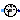
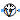
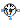

This package hosts sensors for quasi stationary single phase circuits. Quasi stationary theory for single phase circuits can be found in the references.
| Name | Description |
|---|---|
|  FrequencySensor | Frequency sensor |
|  PotentialSensor | Potential sensor |
|  VoltageSensor | Voltage sensor |
| CurrentSensor | Current sensor |
| Power sensor |
This sensor can be used to measure the frequency of the reference system.
PotentialSensor, VoltageSensor, CurrentSensor, PowerSensor
Extends from Interfaces.AbsoluteSensor (Partial potential sensor).
| Name | Description |
|---|---|
| pin | Pin |
| y |
This sensor can be used to measure the complex potential.
VoltageSensor, CurrentSensor, PowerSensor
Extends from Interfaces.AbsoluteSensor (Partial potential sensor).
| Name | Description |
|---|---|
| pin | Pin |
| y |
This sensor can be used to measure the complex voltage.
PotentialSensor, CurrentSensor, PowerSensor
Extends from Interfaces.RelativeSensor (Partial voltage / current sensor).
| Name | Description |
|---|---|
| pin_p | Positive pin |
| pin_n | Negative pin |
| y |
This sensor can be used to measure the complex current.
PotentialSensor, VoltageSensor, PowerSensor
Extends from Interfaces.RelativeSensor (Partial voltage / current sensor).
| Name | Description |
|---|---|
| pin_p | Positive pin |
| pin_n | Negative pin |
| y |
This sensor can be used to measure the complex apparent power.
PotentialSensor, VoltageSensor, CurrentSensor,
Extends from Modelica.Icons.RotationalSensor (Icon representing a round measurement device).
| Name | Description |
|---|---|
| currentP | |
| currentN | |
| voltageP | |
| voltageN | |
| y |